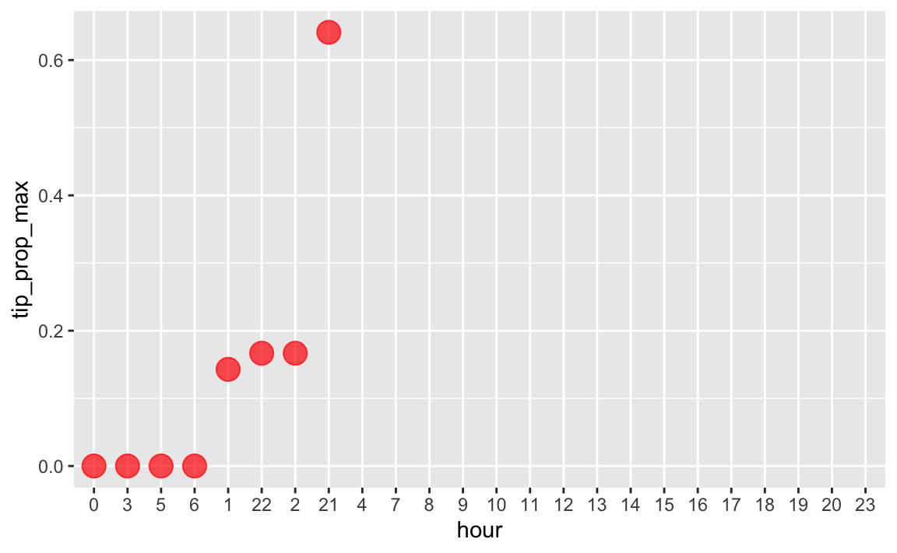

1 Motivation
In this post, we play around with some largish data set, approx. 1 GB, ~1.5 mio. rows. Primarily, we’ll have a look at execution times.
2 Setup
library(tidyverse) # data wrangling
library(data.table) # fast data wrangling
library(lubridate) # time/data wrangling
library(forcats) # factor type variable wrangling
library(conflicted) # name clashes3 Data set 1
We’ll use the official NYC taxi commission data set(s), access from here. Let’s take the most recent month available for Yellow cabs, that is the June 2020 data set.
For the sake of disk space usage, I’ll access my own copy. Please download yours on your own.
3.1 Import data
3.1.1 Download from website
t1 <- Sys.time()
taxi1 <- read_csv("https://s3.amazonaws.com/nyc-tlc/trip+data/yellow_tripdata_2020-06.csv")
t2 <- Sys.time()
t2-t1
#> Time difference of 8.448832 secsThis will depend on the speed of your internet connection.
3.1.2 Import from local disk
d1_path <- "/Users/sebastiansaueruser/datasets/NYC-taxi/yellow_tripdata_2020-06.csv"3.1.3 using read_csv()
t1 <- Sys.time()
taxi1 <- read_csv(d1_path)
t2 <- Sys.time()
t2 - t1
#> Time difference of 1.736037 secs3.1.4 Using fread()
t1 <- Sys.time()
taxi1 <- fread(d1_path)
t2 <- Sys.time()
t2-t1
#> Time difference of 0.8700159 secs3.2 Data set size
dim(taxi1)
#> [1] 549760 18Object size in MB:
object.size(taxi1) / 1024 / 1024
#> 133.3 bytes3.3 Typical data wrangling
t1 <- Sys.time()
taxi1 %>%
select(VendorID, tpep_pickup_datetime,payment_type, tip_amount, total_amount) %>%
drop_na() %>%
mutate(tip_proportion = tip_amount / total_amount,
hour = lubridate::hour(tpep_pickup_datetime)) %>%
group_by(payment_type, hour) %>%
summarise(tip_prop_max = max(tip_proportion)) %>%
arrange(-tip_prop_max) -> taxi1_summary1
t2 <- Sys.time()
time_taken <- t2 - t1Time taken:
time_taken
#> Time difference of 5.754155 secsOutput:
taxi1_summary1
#> # A tibble: 99 x 3
#> # Groups: payment_type [5]
#> payment_type hour tip_prop_max
#> <int> <int> <dbl>
#> 1 1 22 0.978
#> 2 1 2 0.971
#> 3 1 5 0.968
#> 4 1 1 0.958
#> 5 1 21 0.949
#> 6 1 0 0.885
#> 7 1 7 0.874
#> 8 1 20 0.820
#> 9 1 4 0.811
#> 10 1 23 0.774
#> # … with 89 more rows4 Data Set 2
Yellow taxi cab rides of 2020-01, some 500 MB. Here’s the download link to the csv file.
d2_path <- "/Users/sebastiansaueruser/datasets/NYC-taxi/yellow_tripdata_2020-01.csv"4.1 Import data
4.1.1 using read_csv()
t1 <- Sys.time()
taxi2 <- read_csv(d2_path)
t2 <- Sys.time()
t2 - t1
#> Time difference of 19.12124 secs4.1.2 Using fread()
t1 <- Sys.time()
taxi2 <- fread(d2_path)
t2 <- Sys.time()
t2-t1
#> Time difference of 7.067965 secs4.2 Data set size
dim(taxi2)
#> [1] 6405008 18Object size in MB:
object.size(taxi2) / 1024 / 1024
#> 1058.9 bytes4.3 Typical data wrangling
t1 <- Sys.time()
taxi2 %>%
select(VendorID, tpep_pickup_datetime,payment_type, tip_amount, total_amount) %>%
drop_na() %>%
mutate(tip_proportion = tip_amount / total_amount,
hour = lubridate::hour(tpep_pickup_datetime)) %>%
group_by(payment_type, hour) %>%
summarise(tip_prop_max = max(tip_proportion)) %>%
arrange(-tip_prop_max) -> taxi2_summary1
t2 <- Sys.time()
time_taken <- t2 - t1Time taken:
time_taken
#> Time difference of 1.124933 minsOutput:
taxi2_summary1
#> # A tibble: 97 x 3
#> # Groups: payment_type [5]
#> payment_type hour tip_prop_max
#> <int> <int> <dbl>
#> 1 4 21 0.641
#> 2 4 2 0.167
#> 3 4 22 0.167
#> 4 4 1 0.143
#> 5 4 0 0
#> 6 4 3 0
#> 7 4 5 0
#> 8 4 6 0
#> 9 1 0 NaN
#> 10 1 1 NaN
#> # … with 87 more rows4.4 Data viz
This will be fast, as we work with the summarized data set.
taxi2_summary1 %>%
dplyr::filter(payment_type == 4) %>%
mutate(hour = factor(hour)) %>%
mutate(hour = fct_reorder(hour, tip_prop_max, max)) %>%
ggplot(aes(x = hour, y = tip_prop_max)) +
geom_point(color = "red", alpha = .7, size = 5) 
5 Reproducibility
#> ─ Session info ───────────────────────────────────────────────────────────────────────────────────────────────────────
#> setting value
#> version R version 4.0.2 (2020-06-22)
#> os macOS Catalina 10.15.7
#> system x86_64, darwin17.0
#> ui X11
#> language (EN)
#> collate en_US.UTF-8
#> ctype en_US.UTF-8
#> tz Europe/Berlin
#> date 2020-12-05
#>
#> ─ Packages ───────────────────────────────────────────────────────────────────────────────────────────────────────────
#> package * version date lib source
#> assertthat 0.2.1 2019-03-21 [1] CRAN (R 4.0.0)
#> backports 1.2.0 2020-11-02 [1] CRAN (R 4.0.2)
#> blogdown 0.21 2020-10-11 [1] CRAN (R 4.0.2)
#> bookdown 0.21 2020-10-13 [1] CRAN (R 4.0.2)
#> broom 0.7.2 2020-10-20 [1] CRAN (R 4.0.2)
#> callr 3.5.1 2020-10-13 [1] CRAN (R 4.0.2)
#> cellranger 1.1.0 2016-07-27 [1] CRAN (R 4.0.0)
#> cli 2.2.0 2020-11-20 [1] CRAN (R 4.0.2)
#> codetools 0.2-16 2018-12-24 [2] CRAN (R 4.0.2)
#> colorspace 2.0-0 2020-11-11 [1] CRAN (R 4.0.2)
#> conflicted * 1.0.4 2019-06-21 [1] CRAN (R 4.0.0)
#> crayon 1.3.4 2017-09-16 [1] CRAN (R 4.0.0)
#> curl 4.3 2019-12-02 [1] CRAN (R 4.0.0)
#> data.table * 1.13.2 2020-10-19 [1] CRAN (R 4.0.2)
#> DBI 1.1.0 2019-12-15 [1] CRAN (R 4.0.0)
#> dbplyr 2.0.0 2020-11-03 [1] CRAN (R 4.0.2)
#> desc 1.2.0 2018-05-01 [1] CRAN (R 4.0.0)
#> devtools 2.3.2 2020-09-18 [1] CRAN (R 4.0.2)
#> digest 0.6.27 2020-10-24 [1] CRAN (R 4.0.2)
#> dplyr * 1.0.2 2020-08-18 [1] CRAN (R 4.0.2)
#> ellipsis 0.3.1 2020-05-15 [1] CRAN (R 4.0.0)
#> evaluate 0.14 2019-05-28 [1] CRAN (R 4.0.0)
#> fansi 0.4.1 2020-01-08 [1] CRAN (R 4.0.0)
#> farver 2.0.3 2020-01-16 [1] CRAN (R 4.0.0)
#> forcats * 0.5.0 2020-03-01 [1] CRAN (R 4.0.0)
#> fs 1.5.0 2020-07-31 [1] CRAN (R 4.0.2)
#> generics 0.1.0 2020-10-31 [1] CRAN (R 4.0.2)
#> ggplot2 * 3.3.2 2020-06-19 [1] CRAN (R 4.0.0)
#> glue 1.4.2 2020-08-27 [1] CRAN (R 4.0.2)
#> gtable 0.3.0 2019-03-25 [1] CRAN (R 4.0.0)
#> haven 2.3.1 2020-06-01 [1] CRAN (R 4.0.0)
#> hms 0.5.3 2020-01-08 [1] CRAN (R 4.0.0)
#> htmltools 0.5.0 2020-06-16 [1] CRAN (R 4.0.0)
#> httr 1.4.2 2020-07-20 [1] CRAN (R 4.0.2)
#> jsonlite 1.7.1 2020-09-07 [1] CRAN (R 4.0.2)
#> knitr 1.30 2020-09-22 [1] CRAN (R 4.0.2)
#> labeling 0.4.2 2020-10-20 [1] CRAN (R 4.0.2)
#> lifecycle 0.2.0 2020-03-06 [1] CRAN (R 4.0.0)
#> lubridate * 1.7.9.2 2020-11-13 [1] CRAN (R 4.0.2)
#> magrittr 2.0.1 2020-11-17 [1] CRAN (R 4.0.2)
#> memoise 1.1.0 2017-04-21 [1] CRAN (R 4.0.0)
#> modelr 0.1.8 2020-05-19 [1] CRAN (R 4.0.0)
#> munsell 0.5.0 2018-06-12 [1] CRAN (R 4.0.0)
#> pillar 1.4.7 2020-11-20 [1] CRAN (R 4.0.2)
#> pkgbuild 1.1.0 2020-07-13 [1] CRAN (R 4.0.2)
#> pkgconfig 2.0.3 2019-09-22 [1] CRAN (R 4.0.0)
#> pkgload 1.1.0 2020-05-29 [1] CRAN (R 4.0.0)
#> prettyunits 1.1.1 2020-01-24 [1] CRAN (R 4.0.0)
#> processx 3.4.5 2020-11-30 [1] CRAN (R 4.0.2)
#> ps 1.4.0 2020-10-07 [1] CRAN (R 4.0.2)
#> purrr * 0.3.4 2020-04-17 [1] CRAN (R 4.0.0)
#> R6 2.5.0 2020-10-28 [1] CRAN (R 4.0.2)
#> Rcpp 1.0.5 2020-07-06 [1] CRAN (R 4.0.2)
#> readr * 1.4.0 2020-10-05 [1] CRAN (R 4.0.2)
#> readxl 1.3.1 2019-03-13 [1] CRAN (R 4.0.0)
#> remotes 2.2.0 2020-07-21 [1] CRAN (R 4.0.2)
#> reprex 0.3.0 2019-05-16 [1] CRAN (R 4.0.0)
#> rlang 0.4.9 2020-11-26 [1] CRAN (R 4.0.2)
#> rmarkdown 2.5 2020-10-21 [1] CRAN (R 4.0.2)
#> rprojroot 2.0.2 2020-11-15 [1] CRAN (R 4.0.2)
#> rstudioapi 0.13 2020-11-12 [1] CRAN (R 4.0.2)
#> rvest 0.3.6 2020-07-25 [1] CRAN (R 4.0.2)
#> scales 1.1.1 2020-05-11 [1] CRAN (R 4.0.0)
#> sessioninfo 1.1.1 2018-11-05 [1] CRAN (R 4.0.0)
#> stringi 1.5.3 2020-09-09 [1] CRAN (R 4.0.2)
#> stringr * 1.4.0 2019-02-10 [1] CRAN (R 4.0.0)
#> testthat 3.0.0 2020-10-31 [1] CRAN (R 4.0.2)
#> tibble * 3.0.4 2020-10-12 [1] CRAN (R 4.0.2)
#> tidyr * 1.1.2 2020-08-27 [1] CRAN (R 4.0.2)
#> tidyselect 1.1.0 2020-05-11 [1] CRAN (R 4.0.0)
#> tidyverse * 1.3.0 2019-11-21 [1] CRAN (R 4.0.0)
#> usethis 1.6.3 2020-09-17 [1] CRAN (R 4.0.2)
#> utf8 1.1.4 2018-05-24 [1] CRAN (R 4.0.0)
#> vctrs 0.3.5 2020-11-17 [1] CRAN (R 4.0.2)
#> withr 2.3.0 2020-09-22 [1] CRAN (R 4.0.2)
#> xfun 0.19 2020-10-30 [1] CRAN (R 4.0.2)
#> xml2 1.3.2 2020-04-23 [1] CRAN (R 4.0.0)
#> yaml 2.2.1 2020-02-01 [1] CRAN (R 4.0.0)
#>
#> [1] /Users/sebastiansaueruser/Rlibs
#> [2] /Library/Frameworks/R.framework/Versions/4.0/Resources/library